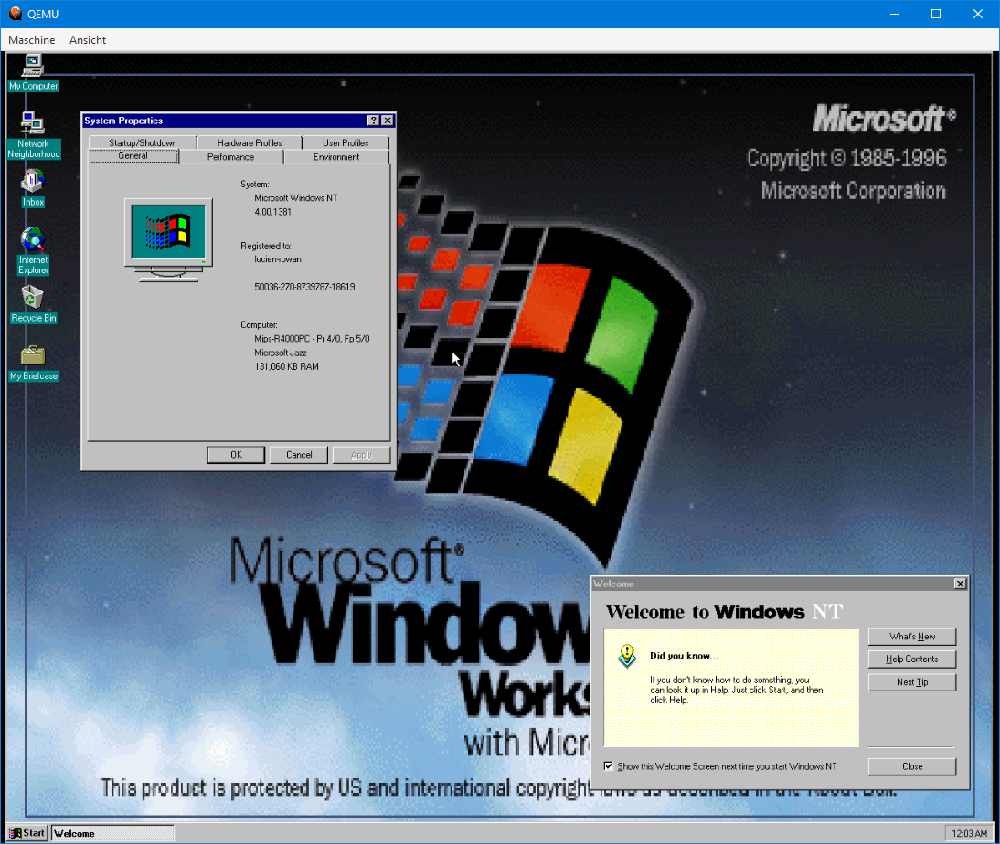

How to install Windows NT 4.0 MIPS on QEMU with EmuGUI
Windows NT 4.0 is an operating system released by Microsoft in 29th July, 1996
as the successor of Windows NT 3.51. It runs on i386, PowerPC, Alpha and - the architecture
that we cover here - MIPS machines. Today we are going to run the MIPS version of Windows
NT 4.0 in QEMU with the help of EmuGUI. Let's get into it!

The MIPS port of Windows NT 4.0 Workstation running on QEMU. (Nicolas Lucien)
Video version
Made by lucien-rowan (aka Nicolas Lucien). (C) 2022 lucien-rowan. All rights reserved.
Link: https://youtu.be/XWyn6905YLY
Notes
-
Only few commercial programs run on the MIPS version of Windows NT, so it is more of a curiosity than something
you could work with. However, some programs have been ported to Windows NT 4.0 MIPS.
-
Generally, every edition of Windows NT 4.0 MIPS should run, but using Windows NT 4.0
Workstation Service Pack 1 is recommended.
Installation
BIOS
After you have QEMU and EmuGUI ready, you must download an external BIOS for Windows to work.
For copyright reasons, it is not included in these programs.
-
Click
here
to download the required ZIP file.
-
Extract the ZIP file and navigate to the extracted content.
-
Rename the file "NTPROM.RAW" to "mipsel_bios.bin".
-
Copy the file "mipsel_bios.bin" to where the EmuGUI executable is stored.
-
Start EmuGUI as usual.
Creating the virtual machine
After preparing the required files, you are now ready to create the Windows NT MIPS
virtual machine.
-
Click on "New Virtual Machine"
-
Type in a suitable name for the virtual machine, select the "mips64el"
architecture and click "Next".
-
Select "magnum" as the machine and set the CPU as "Let QEMU decide".
Give the VM between 64 and 128 MB of RAM and click "Next".
-
Select the desired path for the virtual disk and make sure it is going to be
in the qcow2 format. The maximum amount of space this version of Windows is
going to work with is 2 GB. Click "Next" when everything is done.
-
For VGA, let QEMU decide. Select "dp83932" as the network adapter. Click "Next"
with the USB device tablet unchecked.
-
For the BIOS location, just type in a dot and click "Next".
-
Before you click "Finish", add the following additional arguments:
-global ds1225y.filename=nvram -global ds1225y.size=8200
Preparing the BIOS
After a wait of up to ten seconds, you should see the Windows NT 4.0
virtual machine you just created.
-
Select that VM and click on "Start Selected Virtual Machine".
-
Select your Windows NT 4.0 ISO file as the inserted cdrom.
-
Leave the date as it is, boot from d and click on "Start VM".
-
A QEMU window should now popup. Press Enter when you see the error message
telling that the NVRAM has not been initialized yet.
-
Navigate to "Run setup", then to "Initialize system" and from there to
"Set default configuration".
-
Just press Enter in the corresponding options. What the BIOS suggests
has proven to run well.
-
Back in the "Initialize system" menu, navigate to "Set default environments"
and select the "Scsi Hard Disk". Leave everything else at what the BIOS
recommends.
-
If you accidentally clicked on "Set to system" when you started the VM,
go to "Set time" and type in "01-01-99" as a date and "00:00:00" as a time.
Leaving the date at 2022 will cause the NVRAM to reset itself all over again.
-
Now, navigate to "Set ethernet address" and leave everything as the BIOS
suggests.
-
Navigate to "Return to main menu" and then to "Exit". If the VM hangs, restart it
with the variables mentioned earlier.
Installing Windows
Now for the best part, we are going to install Windows.
-
If the NVRAM shows the error from earlier again, go back to the last part.
-
If that error didn't occur, go to "Run a program" and type:
cd:\mips\arcinst
-
Navigate to "Configure Partitions" and then to "Create system partition".
-
Type in the maximum size possible, press Enter and do it again as soon as it
wants you to do so. After that partition is formatted, press Enter again.
-
Select "Run a program" again but this time, type:
cd:\mips\setupldr
-
Now, install it as usual until you come to the hardware selection.
-
There, set your keyboard layout and after that, navigate to
"The above list matches my computer".
-
Select the partition we created earlier. Press enter to use that partition
and leave the current file system intact!
-
After the first part of installation is complete, you might need to restart the VM
as a whole again. Start it with the variables mentioned above, except this time, we
boot from c.
-
With Windows booted, go through Setup as usual, let Windows detect the network
adapter.
-
After Setup is complete, have fun.
Programs
Have I already mentioned the difficulties of finding programs for this
Windows NT port? To help you out, here is a list of some programs that
have been ported to Windows NT 4.0 MIPS.
| Program name |
Developer |
Download |
| Visual C++ 2.0 |
Microsoft Corporation |
Sorry, your responsibility |
| Visual C++ 4.0 RISC Edition for MIPS |
Microsoft Corporation |
Sorry, your responsibility |
| Windows 1.0 Example Applications |
Microsoft Corporation, NCommander |
https://github.com/NCommander/windows-1-apps-to-64-bit
|
This website and its content are licensed under
BSD-3 Clause if not stated otherwise.
(C) 2022 Nicolas Lucien and EmuGUI contributors. All rights reserved.